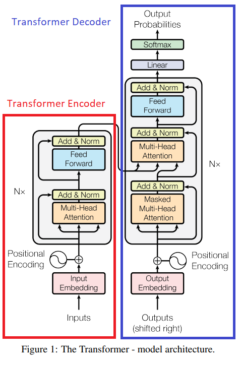
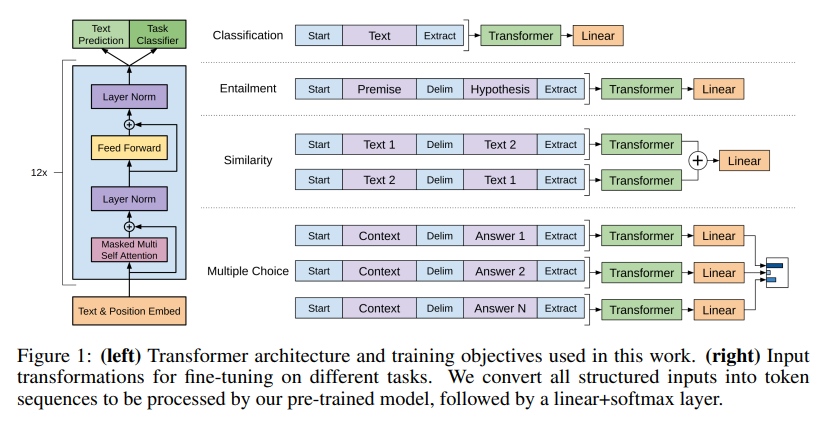

# Set up Google Colab runtime
import sys
import warnings
warnings.filterwarnings("ignore") # stop warnings for the sake of presentation
if "google.colab" in sys.modules:
print("Setting up Google Colab... ")
!git clone https://github.com/Strabes/Intro-to-NLP.git intro-to-nlp
%cd intro-to-nlp
from install import install_requirements
install_requirements()
from IPython.display import HTML, display
def set_css():
display(HTML('''
<style>
pre {
white-space: pre-wrap;
}
</style>
'''))
get_ipython().events.register('pre_run_cell', set_css)Introduction to Natural Language Processing
Greg Strabel
July 27, 2022
Agenda
- Natural Language Processing - Motivating Tasks
- Classical NLP
- Processing text for machine learning
- Text Classification
- Topic Modeling
- Modern NLP - State of the Art models using Transformers
Natural Language Processing
Natural Language Processing is a field combining linguistics and computer science to analyze natural language data and perform various tasks.
NLP is a broad topic that covers many different tasks. Common tasks include:
- Text Classification - Predict the topic of a news article from a predefined set of topics.
- Named Entity Recognition - If “apple” is used in a sentence does it refer to fruit or a company?
- Question Answering - Given a context text, answer a question about it. This can take the form of either extractive question answering (highlighting a span of the input text that contains the answer) or abstractive question answering (generating a freeform answer).
- Text Summarization - Produce a summary of a given text.
- Textual Entailment - Given a premise and hypothesis determine if the hypothesis follows from the premise.
- Translation - Translate English to Spanish.
- Text Generation - Given a prompt, write a story.
- Dialogue State Tracking - Given a conversation, record key facts about it.
- Topic modeling - Given a corpus of texts, discover common topics.
Setting up Google Colab runtime
20 Newsgroups Dataset
The 20 Newsgroups dataset is a classic dataset in NLP for document classification experiments. It consists of ~20K newsgroup posts that are classified into 20 topics.
from sklearn.datasets import fetch_20newsgroups
d_train = fetch_20newsgroups(
subset="train",
remove=('headers','footers','quotes'),
shuffle=True,
random_state=42)
d_test = fetch_20newsgroups(
subset="test",
remove=('headers','footers','quotes'),
shuffle=True,
random_state=42)
print("The topics in the dataset are: " +
", ".join([f"'{x}'" for x in d_train["target_names"]]))The topics in the dataset are: 'alt.atheism', 'comp.graphics', 'comp.os.ms-windows.misc', 'comp.sys.ibm.pc.hardware', 'comp.sys.mac.hardware', 'comp.windows.x', 'misc.forsale', 'rec.autos', 'rec.motorcycles', 'rec.sport.baseball', 'rec.sport.hockey', 'sci.crypt', 'sci.electronics', 'sci.med', 'sci.space', 'soc.religion.christian', 'talk.politics.guns', 'talk.politics.mideast', 'talk.politics.misc', 'talk.religion.misc'Example texts form 20 Newsgroups
--------------------------------------------------
I was wondering if anyone out there could enlighten me on this car I saw
the other day. It was a 2-door sports car, looked to be from the late 60s/
early 70s. It was called a Bricklin. The doors were really small. In addition,
the front bumper was separate from the rest of the body. This is
all I know. If anyone can tellme a model name, engine specs, years
of production, where this car is made, history, or whatever info you
have on this funky looking car, please e-mail.
--------------------------------------------------
A fair number of brave souls who upgraded their SI clock oscillator have
shared their experiences for this poll. Please send a brief message detailing
your experiences with the procedure. Top speed attained, CPU rated speed,
add on cards and adapters, heat sinks, hour of usage per day, floppy disk
functionality with 800 and 1.4 m floppies are especially requested.
I will be summarizing in the next two days, so please add to the network
knowledge base if you have done the clock upgrade and haven't answered this
poll. Thanks.
--------------------------------------------------
well folks, my mac plus finally gave up the ghost this weekend after
starting life as a 512k way back in 1985. sooo, i'm in the market for a
new machine a bit sooner than i intended to be...
i'm looking into picking up a powerbook 160 or maybe 180 and have a bunch
of questions that (hopefully) somebody can answer:
* does anybody know any dirt on when the next round of powerbook
introductions are expected? i'd heard the 185c was supposed to make an
appearence "this summer" but haven't heard anymore on it - and since i
don't have access to macleak, i was wondering if anybody out there had
more info...
* has anybody heard rumors about price drops to the powerbook line like the
ones the duo's just went through recently?
* what's the impression of the display on the 180? i could probably swing
a 180 if i got the 80Mb disk rather than the 120, but i don't really have
a feel for how much "better" the display is (yea, it looks great in the
store, but is that all "wow" or is it really that good?). could i solicit
some opinions of people who use the 160 and 180 day-to-day on if its worth
taking the disk size and money hit to get the active display? (i realize
this is a real subjective question, but i've only played around with the
machines in a computer store breifly and figured the opinions of somebody
who actually uses the machine daily might prove helpful).
* how well does hellcats perform? ;)
thanks a bunch in advance for any info - if you could email, i'll post a
summary (news reading time is at a premium with finals just around the
corner... :( )
--
Tom Willis twillis@ecn.purdue.edu Purdue Electrical EngineeringTokenization
NLP requires converting natural language documents to numeric representations and performing computations on these representations. The first step to encoding documents into numeric representations is breaking the documents down into smaller units via tokenization. One obvious method of tokenization is word tokenization:
import nltk
example = d_train["data"][0]
def word_tokenize(text):
x = nltk.word_tokenize(text.replace("\\"," "))
return x
example_tokenized = word_tokenize(example)
print(example + "\n ==> ")
print(", ".join([f"'{t}'" for t in example_tokenized]))I was wondering if anyone out there could enlighten me on this car I saw
the other day. It was a 2-door sports car, looked to be from the late 60s/
early 70s. It was called a Bricklin. The doors were really small. In addition,
the front bumper was separate from the rest of the body. This is
all I know. If anyone can tellme a model name, engine specs, years
of production, where this car is made, history, or whatever info you
have on this funky looking car, please e-mail.
==>
'I', 'was', 'wondering', 'if', 'anyone', 'out', 'there', 'could', 'enlighten', 'me', 'on', 'this', 'car', 'I', 'saw', 'the', 'other', 'day', '.', 'It', 'was', 'a', '2-door', 'sports', 'car', ',', 'looked', 'to', 'be', 'from', 'the', 'late', '60s/', 'early', '70s', '.', 'It', 'was', 'called', 'a', 'Bricklin', '.', 'The', 'doors', 'were', 'really', 'small', '.', 'In', 'addition', ',', 'the', 'front', 'bumper', 'was', 'separate', 'from', 'the', 'rest', 'of', 'the', 'body', '.', 'This', 'is', 'all', 'I', 'know', '.', 'If', 'anyone', 'can', 'tellme', 'a', 'model', 'name', ',', 'engine', 'specs', ',', 'years', 'of', 'production', ',', 'where', 'this', 'car', 'is', 'made', ',', 'history', ',', 'or', 'whatever', 'info', 'you', 'have', 'on', 'this', 'funky', 'looking', 'car', ',', 'please', 'e-mail', '.'Vocabulary
We then create a vocabulary that maps tokens to indices:
Building a vocabulary from a corpus
Of course we do not use just a single document to create our vocabulary, but a collection of documents, called a corpus. We also need to specify a maximum number of tokens for our vocabulary.
from sklearn.feature_extraction.text import CountVectorizer
import pandas as pd
count_vectorizer = CountVectorizer(
tokenizer = word_tokenize,
max_features = 1000, # max number of tokens in our vocabulary
lowercase = False)
# Train the vocabulary on 1000 example texts
count_vectorizer.fit(d_train["data"][:1000])
print("Here's a subset of our vocabulary:")
dict(islice(count_vectorizer.vocabulary_.items(),10))Here's a subset of our vocabulary:{'I': 146,
'was': 948,
'wondering': 979,
'if': 572,
'anyone': 313,
'out': 731,
'there': 893,
'could': 414,
'me': 659,
'on': 718}Classical NLP
Many traditional statistical and machine learning models expect data to be in a tabular format where columns correspond to specific features and rows correspond to individual observations (in the case of NLP, each document is treated as an individual observation).
A common method of transforming a corpus of documents into a tabular format is bag-of-words where each column in the table represents a given word (token) and the entry in row i, column j is the count of times word j occurs in document i.
pd.DataFrame(
count_vectorizer.transform(d_train["data"][:1000]).toarray(),
columns = count_vectorizer.get_feature_names_out().tolist())| ! | # | $ | % | & | ' | '' | 'AS | 'AX | 'd | ... | x-Soviet | year | years | yes | yet | you | your | { | | | } | |
|---|---|---|---|---|---|---|---|---|---|---|---|---|---|---|---|---|---|---|---|---|---|
| 0 | 0 | 0 | 0 | 0 | 0 | 0 | 0 | 0 | 0 | 0 | ... | 0 | 0 | 1 | 0 | 0 | 1 | 0 | 0 | 0 | 0 |
| 1 | 0 | 0 | 0 | 0 | 0 | 0 | 0 | 0 | 0 | 0 | ... | 0 | 0 | 0 | 0 | 0 | 1 | 1 | 0 | 0 | 0 |
| 2 | 0 | 0 | 0 | 0 | 0 | 0 | 3 | 0 | 0 | 1 | ... | 0 | 0 | 0 | 0 | 0 | 1 | 0 | 0 | 0 | 0 |
| 3 | 0 | 0 | 0 | 0 | 0 | 0 | 0 | 0 | 0 | 1 | ... | 0 | 0 | 0 | 0 | 0 | 1 | 0 | 0 | 0 | 0 |
| 4 | 0 | 0 | 0 | 0 | 0 | 2 | 0 | 0 | 0 | 0 | ... | 0 | 0 | 0 | 0 | 1 | 1 | 0 | 0 | 0 | 0 |
| ... | ... | ... | ... | ... | ... | ... | ... | ... | ... | ... | ... | ... | ... | ... | ... | ... | ... | ... | ... | ... | ... |
| 995 | 0 | 0 | 0 | 0 | 0 | 0 | 0 | 0 | 0 | 0 | ... | 0 | 0 | 0 | 0 | 0 | 0 | 0 | 0 | 0 | 0 |
| 996 | 0 | 0 | 0 | 0 | 0 | 1 | 3 | 0 | 0 | 0 | ... | 0 | 0 | 0 | 0 | 0 | 1 | 0 | 0 | 0 | 0 |
| 997 | 0 | 0 | 0 | 0 | 0 | 0 | 0 | 0 | 0 | 0 | ... | 0 | 0 | 0 | 0 | 0 | 0 | 0 | 0 | 0 | 0 |
| 998 | 0 | 0 | 0 | 0 | 0 | 0 | 1 | 0 | 0 | 0 | ... | 0 | 0 | 0 | 0 | 0 | 0 | 0 | 0 | 2 | 0 |
| 999 | 0 | 0 | 0 | 0 | 0 | 0 | 1 | 0 | 0 | 1 | ... | 0 | 0 | 0 | 1 | 3 | 2 | 0 | 0 | 0 | 0 |
1000 rows × 1000 columns
Improved token set
The simple word level tokenization above produces a number of tokens that are unlikely to be informative. Given a fixed maximum number of tokens we can generally produce a more informative set of tokens by:
- Lowercasing: no reason to produce columns for both “Apple” and “apple”
- Removing stopwords, a list of common tokens such as “the”, “a”, “this”, etc. that are unlikely to add value in the bag of words approach.
- Reducing morphological inflections:
- Stemming uses heuristic rules to reduce morphological inflections by chopping common suffixes from tokens.
- Lemmatization is a more sophisticated technique that generally uses vocabularies, word context and part-of-speech tagging to infer the correct lemma of a word. Lemmatization tends to be more computationally intensive than stemming.
Stopwords
import sklearn
ENGLISH_STOP_WORDS = sklearn.feature_extraction._stop_words.ENGLISH_STOP_WORDS
print("Here are the stopwords we'll remove:\n")
print(", ".join(ENGLISH_STOP_WORDS))Here are the stopwords we'll remove:
each, indeed, back, without, mostly, sincere, thereby, fifty, eleven, due, wherever, should, go, his, everyone, another, at, through, well, fill, former, all, that, ltd, nothing, part, twenty, becomes, five, formerly, put, became, only, sometimes, themselves, be, several, then, hasnt, else, cannot, noone, there, amongst, along, someone, beyond, against, an, those, thereupon, except, four, am, out, over, ever, neither, nevertheless, together, hereafter, thick, where, although, whereupon, them, among, whole, until, anyone, otherwise, least, please, herein, since, forty, do, found, her, call, whereas, become, somehow, however, mill, every, give, been, others, once, bill, twelve, throughout, ten, behind, from, mine, have, therefore, whoever, hereupon, might, further, here, across, anyhow, often, thin, also, whom, alone, seeming, most, rather, beside, less, thus, below, everything, onto, under, hers, keep, why, more, nowhere, moreover, anything, whose, being, wherein, on, one, fifteen, may, name, see, both, thereafter, their, still, re, are, again, or, per, could, six, many, upon, seem, was, even, amount, this, while, after, whether, anyway, how, into, whereafter, such, never, via, top, move, as, the, last, ie, him, latterly, must, none, enough, because, ours, get, always, about, whatever, system, would, had, hereby, your, before, these, elsewhere, everywhere, nor, up, by, afterwards, in, during, my, un, for, already, thence, us, serious, our, something, you, de, a, nobody, within, con, will, same, between, myself, much, not, made, which, is, take, can, either, few, its, inc, becoming, full, third, around, show, other, describe, if, meanwhile, me, two, who, when, eight, they, though, yourself, anywhere, now, himself, ourselves, whence, yours, latter, co, detail, above, some, sometime, whereby, has, whither, of, toward, so, whenever, seems, done, with, than, down, off, beforehand, very, i, perhaps, therein, thru, somewhere, own, he, fire, eg, sixty, any, hundred, bottom, she, almost, yet, we, find, no, towards, yourselves, first, hence, herself, etc, and, next, it, interest, were, besides, empty, seemed, too, cant, nine, what, cry, amoungst, couldnt, three, namely, side, but, front, itself, toStemming
We’ll use the Porter stemmer for word stemming:
from nltk.stem.porter import PorterStemmer
porter_stemmer = PorterStemmer()
stemming_example_words = ["stop","stops","stopping","stopped"]
for word in stemming_example_words:
print(f"The stem of '{word}' is '{porter_stemmer.stem(word)}'")The stem of 'stop' is 'stop'
The stem of 'stops' is 'stop'
The stem of 'stopping' is 'stop'
The stem of 'stopped' is 'stop'Final tokenizer and vocabulary
import re
import sklearn
def word_tokenize(text, stopwords = ENGLISH_STOP_WORDS):
"""Tokenize a string by:
1. Tokenize words
2. Filtering out tokens that don't contain at least
two consecutive alpha-numeric characters or start with
and apostrophe.
3. Lowercase characters
4. Remove stopwords.
5. Remove repeated words.
4. Apply the Porter stemmer
"""
x = nltk.word_tokenize(text.replace("\\"," "))
x = [t for t in x if re.search("[A-Za-z0-9]{2,}",t) and not re.match("'.*",t)]
x = [t.lower() for t in x] # lowercase
x = [t for t in x if t not in stopwords]
x = [x[i] for i in range(len(x)) if i==0 or x[i] != x[i-1]]
return [porter_stemmer.stem(t) for t in x]
count_vectorizer = CountVectorizer(
#tokenizer=word_tokenize,
analyzer=word_tokenize,
max_features=100
)
count_vectorizer.fit(d_train["data"][:1000])
pd.DataFrame(count_vectorizer.transform(d_train["data"][:1000]).toarray(),
columns = count_vectorizer.get_feature_names_out().tolist())| applic | argument | armenian | ask | believ | better | ca | call | car | case | ... | tri | true | understand | use | want | way | window | word | work | year | |
|---|---|---|---|---|---|---|---|---|---|---|---|---|---|---|---|---|---|---|---|---|---|
| 0 | 0 | 0 | 0 | 0 | 0 | 0 | 0 | 1 | 4 | 0 | ... | 0 | 0 | 0 | 0 | 0 | 0 | 0 | 0 | 0 | 1 |
| 1 | 0 | 0 | 0 | 0 | 0 | 0 | 0 | 0 | 0 | 0 | ... | 0 | 0 | 0 | 0 | 0 | 0 | 0 | 0 | 0 | 0 |
| 2 | 0 | 0 | 0 | 0 | 0 | 1 | 0 | 0 | 0 | 0 | ... | 0 | 0 | 0 | 2 | 0 | 1 | 0 | 0 | 0 | 0 |
| 3 | 0 | 0 | 0 | 0 | 0 | 0 | 0 | 0 | 0 | 0 | ... | 0 | 0 | 0 | 0 | 0 | 0 | 0 | 0 | 0 | 0 |
| 4 | 0 | 0 | 0 | 0 | 0 | 0 | 0 | 0 | 0 | 0 | ... | 0 | 0 | 1 | 0 | 0 | 0 | 0 | 0 | 0 | 0 |
| ... | ... | ... | ... | ... | ... | ... | ... | ... | ... | ... | ... | ... | ... | ... | ... | ... | ... | ... | ... | ... | ... |
| 995 | 0 | 0 | 0 | 0 | 0 | 0 | 0 | 0 | 0 | 0 | ... | 0 | 0 | 0 | 0 | 0 | 0 | 0 | 0 | 0 | 0 |
| 996 | 0 | 0 | 0 | 0 | 0 | 0 | 0 | 0 | 0 | 0 | ... | 0 | 0 | 0 | 0 | 0 | 0 | 0 | 0 | 0 | 0 |
| 997 | 0 | 0 | 0 | 0 | 0 | 0 | 0 | 0 | 0 | 0 | ... | 0 | 0 | 0 | 0 | 0 | 0 | 0 | 0 | 0 | 0 |
| 998 | 0 | 0 | 0 | 0 | 0 | 0 | 0 | 0 | 0 | 0 | ... | 1 | 0 | 0 | 2 | 0 | 0 | 0 | 0 | 0 | 0 |
| 999 | 0 | 0 | 0 | 1 | 0 | 0 | 0 | 1 | 0 | 0 | ... | 1 | 0 | 0 | 7 | 0 | 0 | 0 | 0 | 1 | 0 |
1000 rows × 100 columns
N-grams
One of the primary downsides of bag-of-words is that it loses all information contained in the order of the tokens. For example, both “Dog bites man” and “Man bites dog” produce the same bag-of-words representation. One method for partially overcoming this shortcoming is to use n-grams; the creation of a new token by combining n consecutive tokens
import random
random.seed(1)
count_vectorizer = CountVectorizer(
tokenizer=word_tokenize,
max_features=2000,
ngram_range=(1,4), # n-grams from 1-4
max_df = 0.5, # tokens occurring in a higher proportion of documents than this are left out
min_df = 0.0001 # tokens occurring in a lower proportion of documents than this are left out
)
count_vectorizer.fit(d_train["data"])
random_sample_n_grams = random.sample(
[i for i in count_vectorizer.get_feature_names_out() if re.search(" ",i)],10)
print("Some example n-grams for n>=2 \n")
print(", ".join([f"'{t}'" for t in random_sample_n_grams]))Some example n-grams for n>=2
'doe know', 'serial number', 'avail anonym ftp', 'hard disk', 'disk drive', 'new york', 'make sure', 'ms. myer', 'long time', 'ftp site'Text Classification with Logistic Regression
Finally we can use our matrix of vectorized texts to fit a logistic regression model for topic classification. We pipe the output of our CountVectorizer through a TfidfTransformer (Term Frequency Inverse Document Frequency) object that normalizes document-level token counts by corpus-level token frequency. This is then piped into a logistic regression classifier. We fit our pipeline on the training data.
from sklearn.pipeline import Pipeline
from sklearn.feature_extraction.text import TfidfTransformer
from sklearn.linear_model import LogisticRegression
pipe = Pipeline([
("count_vectorizer", count_vectorizer),
("tfidf_transformer", TfidfTransformer()),
("logistic_reg", LogisticRegression(multi_class='multinomial'))])
pipe.fit(d_train["data"],d_train["target"])Pipeline(steps=[('count_vectorizer',
CountVectorizer(max_df=0.5, max_features=2000, min_df=0.0001,
ngram_range=(1, 4),
tokenizer=<function word_tokenize at 0x0000014B317B5940>)),
('tfidf_transformer', TfidfTransformer()),
('logistic_reg',
LogisticRegression(multi_class='multinomial'))])In a Jupyter environment, please rerun this cell to show the HTML representation or trust the notebook. On GitHub, the HTML representation is unable to render, please try loading this page with nbviewer.org.
Pipeline(steps=[('count_vectorizer',
CountVectorizer(max_df=0.5, max_features=2000, min_df=0.0001,
ngram_range=(1, 4),
tokenizer=<function word_tokenize at 0x0000014B317B5940>)),
('tfidf_transformer', TfidfTransformer()),
('logistic_reg',
LogisticRegression(multi_class='multinomial'))])CountVectorizer(max_df=0.5, max_features=2000, min_df=0.0001,
ngram_range=(1, 4),
tokenizer=<function word_tokenize at 0x0000014B317B5940>)TfidfTransformer()
LogisticRegression(multi_class='multinomial')
We evaluate the model using precision and recall. For a given topic:
Precision is the number of times we predicted that topic correctly divided by the number of times we predicted that topic (both correctly and incorrectly).
Recall is the number of times we predicted that topic correctly divided by the number of actual cases of the topic.
A model that just guessed randomly and uniformly on our dataset would have both precision and recall close to 0.05. Our simple model is already much better than that:
from sklearn.metrics import classification_report
test_preds = pipe.predict(d_test["data"])
print(
f"Classification report for classifier:\n" +
f"""{classification_report(
d_test['target'], test_preds,
target_names=d_test['target_names'])}\n""")Classification report for classifier:
precision recall f1-score support
alt.atheism 0.41 0.42 0.41 319
comp.graphics 0.56 0.59 0.57 389
comp.os.ms-windows.misc 0.57 0.55 0.56 394
comp.sys.ibm.pc.hardware 0.58 0.56 0.57 392
comp.sys.mac.hardware 0.63 0.56 0.59 385
comp.windows.x 0.70 0.61 0.65 395
misc.forsale 0.71 0.74 0.72 390
rec.autos 0.66 0.62 0.64 396
rec.motorcycles 0.42 0.70 0.53 398
rec.sport.baseball 0.72 0.75 0.73 397
rec.sport.hockey 0.83 0.79 0.81 399
sci.crypt 0.81 0.63 0.71 396
sci.electronics 0.48 0.53 0.50 393
sci.med 0.68 0.68 0.68 396
sci.space 0.69 0.64 0.67 394
soc.religion.christian 0.60 0.73 0.66 398
talk.politics.guns 0.51 0.58 0.54 364
talk.politics.mideast 0.79 0.69 0.73 376
talk.politics.misc 0.48 0.40 0.43 310
talk.religion.misc 0.32 0.16 0.21 251
accuracy 0.61 7532
macro avg 0.61 0.60 0.60 7532
weighted avg 0.62 0.61 0.61 7532
Topic Modeling
In many use cases, labeled training data is limited or not available. It is still possible though to learn about the documents in such a corpus. Topic modeling constructs latent topics from a corpus and represents each text as some combination of these latent topics.
from sklearn.decomposition import LatentDirichletAllocation
n_components = 20
lda = LatentDirichletAllocation(
n_components=n_components,
#max_iter=5,
#learning_method="online",
#learning_offset=50.0,
random_state=0,
)
lda_pipe = Pipeline([
("count_vectorizer", count_vectorizer),
("tfidf_transformer", TfidfTransformer()),
("lda", lda)])
lda_pipe.fit(d_train["data"])Pipeline(steps=[('count_vectorizer',
CountVectorizer(max_df=0.5, max_features=2000, min_df=0.0001,
ngram_range=(1, 4),
tokenizer=<function word_tokenize at 0x0000014B317B5940>)),
('tfidf_transformer', TfidfTransformer()),
('lda',
LatentDirichletAllocation(n_components=20, random_state=0))])In a Jupyter environment, please rerun this cell to show the HTML representation or trust the notebook. On GitHub, the HTML representation is unable to render, please try loading this page with nbviewer.org.
Pipeline(steps=[('count_vectorizer',
CountVectorizer(max_df=0.5, max_features=2000, min_df=0.0001,
ngram_range=(1, 4),
tokenizer=<function word_tokenize at 0x0000014B317B5940>)),
('tfidf_transformer', TfidfTransformer()),
('lda',
LatentDirichletAllocation(n_components=20, random_state=0))])CountVectorizer(max_df=0.5, max_features=2000, min_df=0.0001,
ngram_range=(1, 4),
tokenizer=<function word_tokenize at 0x0000014B317B5940>)TfidfTransformer()
LatentDirichletAllocation(n_components=20, random_state=0)

fig, ax = plt.subplots(figsize=(15,10))
for row in (pd.DataFrame(lda_test_preds)
.assign(target = d_test["target"])
.sample(100, random_state=0)
.iterrows()):
ax.plot(range(n_components),row[1][:n_components]
#,c=row[1]["target"]
, c=lcm(int(row[1]["target"]))
)
from matplotlib import patches
handles = [patches.Patch(color = lcm(i), label=d_test["target_names"][i]) for i in range(20)]
ax.legend(handles=handles)<matplotlib.legend.Legend at 0x14b0b4dcee0>

State-of-the-Art NLP with Transformers
All state-of-the-art models in NLP are now a type of deep neural network using a variant of the architecture called a “transformer”.
The transformer architecture was originally introduced in the paper Attention is All You Need by Vaswani et al. 2017 (Google Brain/Google Research).
Transformer Architecture
Attention is All You Need was concerned with translation, for instance from English to German or English to French. In the case of English to German, the inputs to the Transformer Encoder are the full sequence of English token indices from a document, \(\mathbb{x} = (x_1, x_2, ... , x_n)\). The output of the Transformer Encoder are a corresponding sequence of vectors \(\mathbb{z} = (z_1, z_2, ... , z_n)\).
The Transformer Decoder then generates an output sequence \(\mathbb{y} = (y_1, y_2, ... , y_m)\) of German token indices one at a time. At each time step the Transformer Decoder takes the Transformer Encoder output \(\mathbb{z}\) and the part of \(\mathbb{y}\) that it had previously generated (\((y_1, ..., y_k)\) where \(k<m\)) and produces the next token \(y_{k+1}\)
The Transformer was trained on several million English-German (or English-French) sentence pairs using backpropogation.
Transformers take over all of NLP
Since the publication of Attention is All You Need transformers have pushed out the performance frontier in all NLP tasks. There are three main branches of the transformer family tree:
- Full transformer: This is the original transformer from Attention is All You Need. These models excel at tasks that make use of a reference text and generate a new output text, for instance translation and abstractive summarization.
- Decoder-only transformer: these are good at generating text without a provided reference text. Decoder-only models excel as chat bots and writing stories given a prompt.
- Encoder-only transformer: these excel in any NLP task that does not require generating new text, for instance classification, named entity recognition and extractive question answering and summarization.
Decoder-only Transformers - GPT
In Improving Language Understanding by Generative Pre-Training, Radford et al 2018 (OpenAI), used just the Transformer Decoder and introduced a novel two-stage training paradigm:
Pretraining (Unsupervised): Train the model on a large corpus of unlabeled text data (typically scraped from the web). Given a chunk of text as input, the model’s objective is to predict the word that came next in the source text. For instance, the model receives the input ["The", "cat", "is", "on", "the"] and must predict which word came next. Pretraining allows the model to learn general features of the language.
Fine-tuning (Supervised): For a specific task with limited labeled training data, like classification or textual entailment, initialize a similar model architecture using the weights learned from pretraining and continue training for the specific task. This requires some creativity in formatting the input data to the model and attaching an additional output layer that is task-specific.
GPT Pretraining and Fine-tuning
Transformer Decoder models excel at tasks requiring text generation, for instance chat bots. The most cited transformer decoder models include:
- OpenAI’s GPT, GPT-2, GPT-3 and GPT-Neo
- Google’s PaLM and LaMDA
Encoder-only transformers - BERT
Even though many languages are written and read left to right, the meaning of words and concepts in sentences flow in both directions. The Transformer Decoder-only models do not take advantage of this bidirectionality. Consider the sentence: “The bat that flew through the night air almost hit the player on deck.” If you only saw the first 8 words (“The bat that flew through the night air”) you probably have a very different understanding of “bat” than if you saw the full sentence. The correct meaning of the word “bat” in this sentence flows backwords from “the player on deck”.
In BERT: Pre-training of Deep Bidirectional Transformers for Language Understanding (Devlin et al. 2019 - also at Google) took just the Transformer Encoder from Attention is All You Need and extended the pretraining/fine-tuning approach to produced models that take advantage of bidirectionality and that achieved state-of-the-art performance.
Pretraining (Unsupervised): Just like in Radford et al., train the model on a large corpus of unlabeled text data. Given a chunk of text as input, the model’s objective is to predict randomly masked words. For instance, the model receives the input ["The", "[MASK]", "is", "on", "[MASK]", "mat"] and must predict which words are under the "[MASK]" tokens. The original BERT paper also included another pretraining task, next sentence prediction, in which the model had to predict whether one sentence followed another in a source text. This task is generally dropped in more recent versions of BERT.
Fine-tuning (Supervised): The fine-tuning stage is similar to that in Radford et al.: for each task, initialize a modified architecture with weights learned from pretraining and continue to train the model on labeled data.
Using Google’s PEGASUS full transformer model for abstractive summarization.
Now we’ll do an actual demo of Google’s PEGASUS full transformer model to perform abstractive summarization.
Abstractive summarization takes a reference text as input to the transformer encoder and generates a summary using the transformer decoder.
Google provides a trained PEGASUS model in the Huggingface Model Hub. Huggingface is an opensource project that provides datasets, pretrained models and software for creating, training and using models across torch, tensorflow and JAX.
CNN/Daily Mail Dataset
We’ll download the CNN/Daily Mail Dataset from Huggingface. The CNN/Daily Mail dataset is well-suited for abstractive summarization because CNN/Daily Mail themselves provide brief summaries of their articles.
dataset = load_dataset("cnn_dailymail", version="3.0.0")
print(f"Features: {dataset['train'].column_names}")Features: ['article', 'highlights', 'id']Here’s an example of an article and its summary:
sample_idx = 0
sample = dataset["test"][sample_idx]
print(f"""
Article (total length: {len(sample["article"])}):
""")
print(sample["article"])
print(f'\nSummary (length: {len(sample["highlights"])}):')
print(sample["highlights"])
Article (total length: 3612):
(CNN)The Palestinian Authority officially became the 123rd member of the International Criminal Court on Wednesday, a step that gives the court jurisdiction over alleged crimes in Palestinian territories. The formal accession was marked with a ceremony at The Hague, in the Netherlands, where the court is based. The Palestinians signed the ICC's founding Rome Statute in January, when they also accepted its jurisdiction over alleged crimes committed "in the occupied Palestinian territory, including East Jerusalem, since June 13, 2014." Later that month, the ICC opened a preliminary examination into the situation in Palestinian territories, paving the way for possible war crimes investigations against Israelis. As members of the court, Palestinians may be subject to counter-charges as well. Israel and the United States, neither of which is an ICC member, opposed the Palestinians' efforts to join the body. But Palestinian Foreign Minister Riad al-Malki, speaking at Wednesday's ceremony, said it was a move toward greater justice. "As Palestine formally becomes a State Party to the Rome Statute today, the world is also a step closer to ending a long era of impunity and injustice," he said, according to an ICC news release. "Indeed, today brings us closer to our shared goals of justice and peace." Judge Kuniko Ozaki, a vice president of the ICC, said acceding to the treaty was just the first step for the Palestinians. "As the Rome Statute today enters into force for the State of Palestine, Palestine acquires all the rights as well as responsibilities that come with being a State Party to the Statute. These are substantive commitments, which cannot be taken lightly," she said. Rights group Human Rights Watch welcomed the development. "Governments seeking to penalize Palestine for joining the ICC should immediately end their pressure, and countries that support universal acceptance of the court's treaty should speak out to welcome its membership," said Balkees Jarrah, international justice counsel for the group. "What's objectionable is the attempts to undermine international justice, not Palestine's decision to join a treaty to which over 100 countries around the world are members." In January, when the preliminary ICC examination was opened, Israeli Prime Minister Benjamin Netanyahu described it as an outrage, saying the court was overstepping its boundaries. The United States also said it "strongly" disagreed with the court's decision. "As we have said repeatedly, we do not believe that Palestine is a state and therefore we do not believe that it is eligible to join the ICC," the State Department said in a statement. It urged the warring sides to resolve their differences through direct negotiations. "We will continue to oppose actions against Israel at the ICC as counterproductive to the cause of peace," it said. But the ICC begs to differ with the definition of a state for its purposes and refers to the territories as "Palestine." While a preliminary examination is not a formal investigation, it allows the court to review evidence and determine whether to investigate suspects on both sides. Prosecutor Fatou Bensouda said her office would "conduct its analysis in full independence and impartiality." The war between Israel and Hamas militants in Gaza last summer left more than 2,000 people dead. The inquiry will include alleged war crimes committed since June. The International Criminal Court was set up in 2002 to prosecute genocide, crimes against humanity and war crimes. CNN's Vasco Cotovio, Kareem Khadder and Faith Karimi contributed to this report.
Summary (length: 233):
Membership gives the ICC jurisdiction over alleged crimes committed in Palestinian territories since last June .
Israel and the United States opposed the move, which could open the door to war crimes investigations against Israelis .Digression on subword tokenization
Modern transformer models typically use a form of tokenization called subword tokenization rather than the word tokenization that we used before. This allows the model to construct rare words or words that did not occur in the training data from subword pieces rather than treating them as out-of-vocabulary:
encoded = pipe.tokenizer.encode("""
Hello. My name is Greg Strabel
and I'm a data scientist. Supercalifragilisticexpialidocious.
""")
print(f"Encoded text: {', '.join([str(i) for i in encoded])}")
decoded = [pipe.tokenizer.decode(i) for i in encoded]
print(f"Decoded text: {', '.join([str(i) for i in decoded])}")Encoded text: 8087, 107, 600, 442, 117, 8303, 26159, 10539, 111, 125, 131, 208, 114, 335, 9732, 107, 2422, 62955, 40972, 4935, 10855, 39053, 7434, 15398, 35898, 107, 1
Decoded text: Hello, ., My, name, is, Greg, Stra, bel, and, I, ', m, a, data, scientist, ., Super, cali, frag, il, istic, exp, ial, ido, cious, ., </s>Summarizing the example article
sample_text = dataset["test"][sample_idx]["article"][:2000]
pipe_out = pipe(sample_text)
summary = pipe_out[0]["summary_text"].replace(" .<n>", ".\n")
print(summary)The Palestinian Authority officially becomes the 123rd member of the International Criminal Court.
The move gives the court jurisdiction over alleged crimes in Palestinian territories .Wrap Up
This has been a very short introduction to Natural Language Processing, touching on only a small subset of NLP:
- Common text preprocessing steps
- Classical NLP with bag-of-words, n-grams and logistic regression
- State-of-the-art NLP with Transformers.
Additional resources:
- Speech and Language Processing 3rd Edition
- Natural Language Processing with Transformers: Building Language Applications with Hugging Face